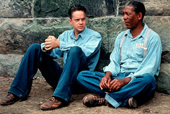
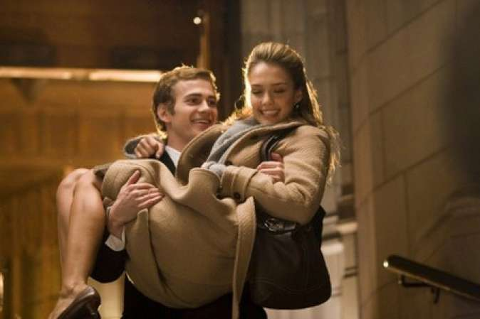
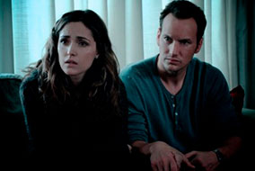
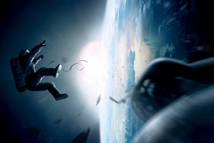
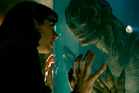
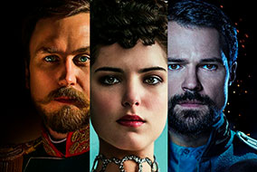
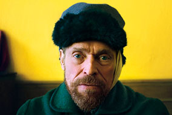
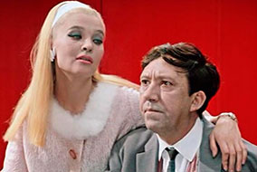
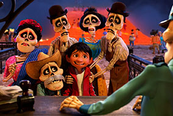
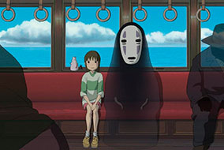

Побег из Шоушенка
Успешный банкир Энди Дюфрейн
обвинен в убийстве собственной
жены и ее любовника. Оказавшись в
тюрьме под названием Шоушенк, он
сталкивается с жестокостью и
беззаконием, царящим по обе
стороны решетки. Каждый, кто
попадает в эти стены, становится их
рабом до конца жизни. Но Энди,
вооруженный живым умом и доброй
душой, отказывается мириться с
приговором судьбы и начинает
разрабатывать невероятно дерзкий
план своего освобождения.

Наркоз
Клай Бересфорд вынужден лечь под
нож. Однако в процессе операции на
сердце он неожиданно приходит в
себя. Находясь в парализованном
состоянии, будучи не в силах
пошевелить ни рукой, ни ногой, он,
тем не менее, чувствует каждое
касание скальпеля к своей плоти...

Астрал
Джош и Рене переезжают со своими
детьми в новый дом, но не успевают
толком распаковать вещи, как
начинаются странные события.
Необъяснимо перемещаются
предметы, в детской звучат странные
звуки... Но в настоящий ужас
приходят родители, когда их
десятилетний сын Далтон впадает в
кому. Все усилия врачей в больнице
помочь мальчику безуспешны.

Гравитация
Доктор Райан Стоун, блестящий
специалист в области медицинского
инжиниринга, отправляется в свою
первую космическую миссию под
командованием ветерана
астронавтики Мэтта Ковальски, для
которого этот полет — последний
перед отставкой. Но во время,
казалось бы, рутинной работы за
бортом случается катастрофа.
Шаттл уничтожен, а Стоун и
Ковальски остаются совершенно
одни; они находятся в связке друг с
другом, и все, что они могут, — это
двигаться по орбите в абсолютно
черном пространстве без всякой
связи с Землей и какой-либо
надежды на спасение.

Форма воды
Действие разворачивается в 1963
году. Главная героиня — немая
уборщица в научной лаборатории. В
стенах секретного учреждения идёт
работа по изучению отловленного
человека-амфибии. Женщина
влюбляется в мутанта и помогает ему
бежать…

Матильда
Последний русский император и
балерина, утвердившая славу
русского балета. Страсть, которая
могла изменить русскую историю.
Любовь, ставшая легендой. В жизни
каждого человека случаются
несколько дней, которые могут
изменить её навсегда. Когда
происходит самое главное. Ты
оборачиваешься на голос любви. И
делаешь выбор. Но если властитель
империи полюбит танцовщицу,
сводящую с ума своей красотой…
Успенский собор, Кремль, Ходынское
поле, царские дворцы, сцены
Мариинского и Большого театров —
там, где бьется сердце вечной России.

Ван Гог. На пороге вечности
Винсент Ван Гог был одержим
живописью и мечтал изменить мир.
Он жил в Париже на Монмартре и
водил дружбу с Полем Гогеном. Из
спиртного отдавал предпочтение
абсенту, а если уж влюблялся, то со
всей страстью. В то время его холсты
почти не продавались, а сегодня —
одни из самых дорогих в мире. Как
истинный гений, он всегда находился
на пороге вечности…

Бриллиантовая рука
В южном городке орудует шайка
«валютчиков», возглавляемая
Шефом и его помощником Графом (в
быту — Геной Козодоевым).
Скромный советский служащий и
примерный семьянин Семен
Семенович Горбунков отправляется в
зарубежный круиз на теплоходе, на
котором также плывет Граф,
который должен забрать бриллианты
в одном из восточных городов и
провезти их в загипсованной руке.
Но в силу недоразумения вместо
жулика на условленном месте падает
ничего не подозревающий Семен
Семенович, и драгоценный гипс
накладывают ему. Вот тут-то все и
начинается…

Тайна Коко
12-летний Мигель живет в
мексиканской деревушке в семье
сапожников и тайно мечтает стать
музыкантом. Тайно — потому что в
его семейном клане музыка
считается проклятием. Когда-то его
прадед оставил свою жену, прабабку
Мигеля, ради мечты, которая теперь
не дает спокойно жить Мигелю. С тех
пор музыкальная тема в семье стала
табу. Мигель обнаруживает, что
между ним и его любимым певцом
Эрнесто де ла Крусом, ныне
покойным, существует некая — пока
неназванная — связь. Паренек
отправляется к своему кумиру в
Страну Мертвых, где встречает души
своих предков. Коко знакомится там
с духом-трикстером по имени Эктор
(в облике скелета), который становится его напарником-
проводником. Вдвоем они
отправляются на поиски де ла Круса.

Унесённые призраками
Тихиро с мамой и папой переезжают
в новый дом. Заблудившись по
дороге, они оказываются в странном
пустынном городе, где их ждет
великолепный пир. Родители с
жадностью набрасываются на еду и к
ужасу девочки превращаются в
свиней, став пленниками злой
колдуньи Юбабы. Теперь,
оказавшись одна среди волшебных
существ и загадочных видений,
Тихиро должна придумать, как
избавить своих родителей от чар
коварной старухи.